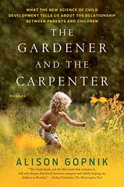

《园丁与木匠》
书·Alison Gopnik, 2016·The Gardener and the Carpenter: What the New Science of Child Development Tells Us About the Relationship Between Parents and Children

把发展科学转化为对养育控制欲的反思。
- 作者
- Alison Gopnik
- 年份
- 2016
- 难度
- 入门
- 类型
- 实践
- 所属学派
- 婴儿认知研究、生态系统理论
版本
- 中文版 《园丁与木匠》 [美] 艾莉森·高普尼克 · 刘家杰 / 赵昱鲲 译 · 浙江人民出版社 · 2019 豆瓣 8 分（3320 人评价） 豆瓣页面 ↗
- 英文版 The Gardener and the Carpenter: What the New Science of Child Development Tells Us About the Relationship Between Parents and Children Alison Gopnik · Farrar, Straus and Giroux, first edition · 2016 Open Library ↗